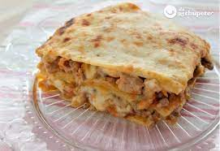
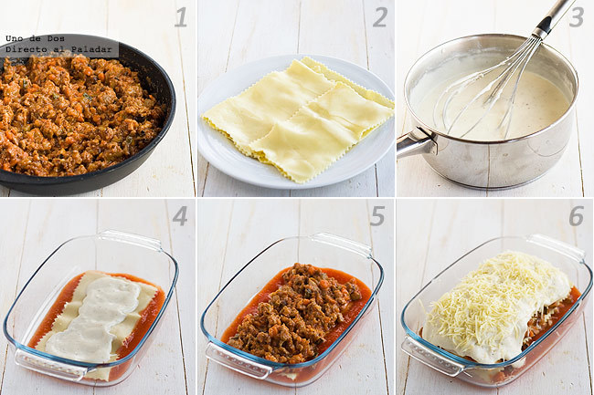

Receta lasagna

La foto de una lasaña caserita
recomiendo la mezcla de carne tal cual para que os quede mucho más jugosa. Si tenéis tiempo suficiente me gusta dejar la carne con abundante salsa bastante rato a fuego muy bajo, el resultado de este modo es fabuloso.
Ingredientes
- Carne picada de ternera 300 g
- Carne picada de cerdo 200 g
- Bacon en lonchas 2
- Zanahoria 2
- Pimiento verde 1
- Cebolla 1
- Diente de ajo 1
- Setas 150g
- Calabacin 0.5
- Vino tinot 50ml
- Sal
- Aceite de oliva virgen extra
- Albahaca
- Orégano seco
- Salsa de tomate
- Láminas de pasta para lasaña
- Queso rallado
- Leche entera 600
- Harina de trigo
- Mantequilla
- Nuez moscada molida
Pasos
- En una cazuela o sartén baja amplia ponemos aceite de oliva. Salteamos la cebolla, el pimiento y las zanahorias, previamente limpias y troceadas, hasta que tomen color. Cuando estén casi en su punto echamos el calabacín en trozos pequeños y los dientes de ajo, rehogamos el conjunto.
- Añadimos el bacon y las setas picadas, dejamos que se hagan y agregamos la carne picada, ayudándonos de un tenedor para deshacer las posibles bolas que se forman a veces al apelmazarse la carne. Dejamos simplemente que tome color, echamos el vino, subimos el fuego y esperamos que se evapore.
- Cubrimos con la salsa de tomate, salamos, echamos orégano y albahaca al gusto,y dejamos reducir removiendo de vez en cuando a fuego muy bajo. Mientras hacemos la salsa bechamel poniendo en un cazo la mantequilla, cuando esté derretida echamos la harina y damos unas vueltas para que se tueste. Vertemos poco a poco la leche caliente, y sin dejar de remover, cocemos unos 10 minutos hasta que espese.
- Salpimentamos y añadimos la nuez moscada al gusto. Para montar la lasaña colocamos en el fondo de una fuente apta para horno un poco de salsa de tomate o bechamel, encima una placa de pasta para lasaña, previamente cocida en agua con sal, un poco de bechamel, y relleno.
- Repetimos la misma operación hasta llegar casi al borde de la fuente. Acabamos con una placa de pasta que cubrimos con salsa bechamel y espolvoreamos con queso rallado para gratinar. Horneamos durante 30 minutos y gratinamos durante dos. Servimos inmediatamente bien caliente.
Y asi es como se hace la lasaña. A continuacion una imagen que resume los pasos a seguir para que sea mas didactico
